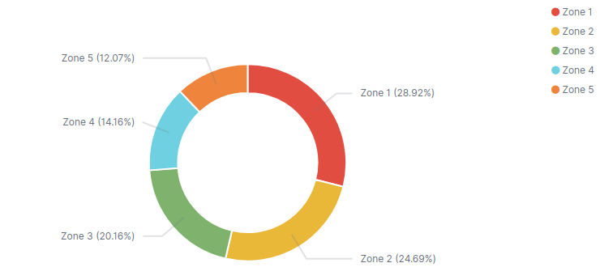
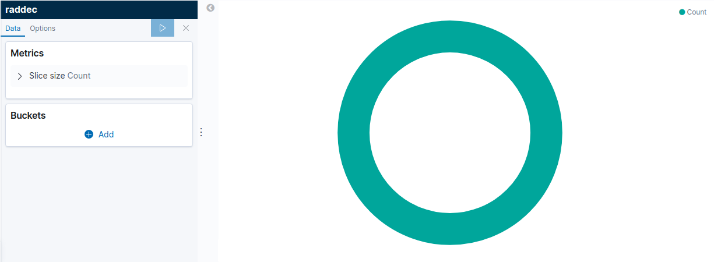
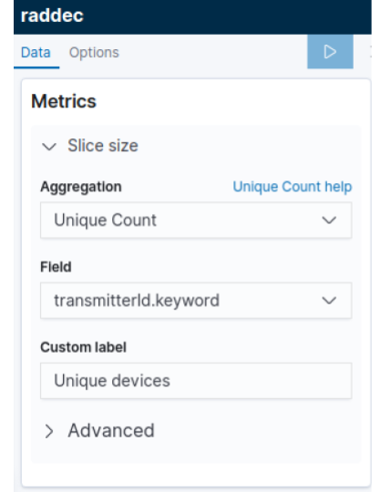
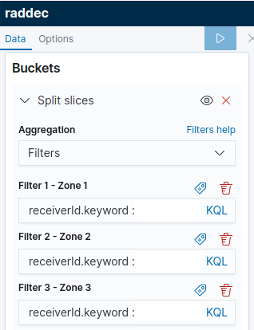
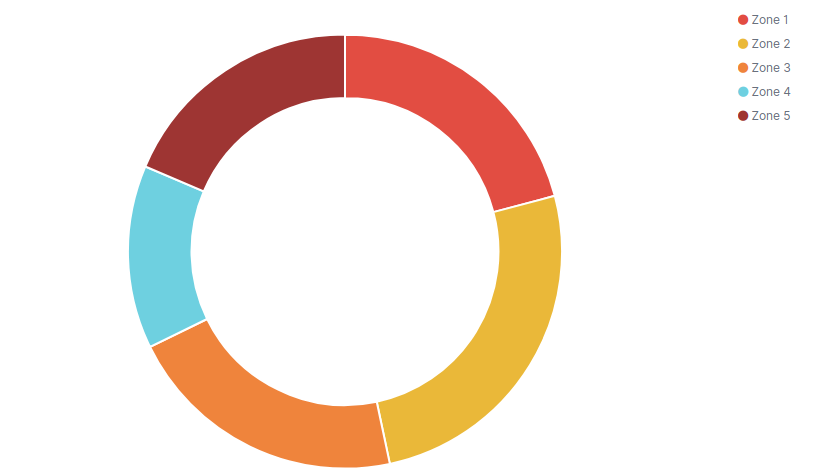

Create a pie chart in Kibana to compare zone activity
Our step-by-step guide to create a pie chart visualisation in Kibana.
The TL;DR (Too Long; Didn't Read)
Learn how we at reelyActive use Kibana pie charts to compare the relative activity of rooms/zones and their occupants.
- What will this accomplish?
- A visualisation that shows a percentage of the total activity detected per zone during a specific period.
- Is there an easier way?
- Manual occupancy counts using pen and paper?
- So why would I read this?
- To learn both how and why to automate relative room activity observation using a pie chart visualisation.
Prerequisites
reelyActive open source software with Elasticsearch and Kibana.
-

[Optional] Prepare a reelyActive laptop from scratch
Includes our step-by-step guide to install Elasticsearch and Kibana on a Linux computer/server. -

[Optional] Set up a hosted Elasticsearch Service
Includes our step-by-step guide to setup Elastic's convenient hosted cloud service.
In order for there to be data to visualise, the reelyActive software must also have collected and written raddec data to Elasticsearch.
Creating a new pie chart visualization Step 1 of 3
Create a pie chart in Kibana with the default settings.
- What's a pie chart?
- A pie chart is a circular statistical graphic, which is divided into slices to illustrate numerical proportion.
- Why Kibana?
- Kibana makes it easy to visualize data from an Elasticsearch database, where the source data is stored.
Open Kibana and then:
- Select the Visualize tab from the left menu bar
- Click the Create a Visualization button
- Select the Pie chart
The default settings will result in a pie chart with just one bucket being generated, similar to that below. The next step will be to define a meaningful set of metrics and buckets.
Defining Pie Chart Metrics Step 2 of 3
Define a meaningful set of metrics and buckets to compare zone performance
- What's a bucket?
- A bucket is a computer science term for grouping data based on a criteria.
- What are these criteria?
- The metrics will be data sensed and the bucket will split slices to illustrate numerical proportion.
In the pie chart editor, configure the Metrics as indicated below:
- 
-
- Click to expand the Slice Size
- Select Unique Count from the Aggregation pull-down
- Select transmitterId.keyword from the Field pull-down
- Enter a label in the Custom Label field
- Click the right arrow on the top of the tool bar to update the changes
Then configure the Buckets as indicated below:
- 
-
- Click to expand the Split Slices buckets
- Select Filters aggregation from the pull-down
- Each filter will collect all documents that match its associated zone. Customize the filter by adding receiverId.keyword(s), a RSSI threshold, a Type filter etc
- Define a Label to specify the zone by clicking the icon.
- Click the right arrow on the top of the tool bar to update the changes
The pie chart should now include slices that provide a visualization of the occupancy percentage of each room.
The basic pie chart visualization is complete. It looks friendly and smart, but without information it communicates anything meaningful. The next step explains how to customize the chart to get information and values.
Customising the pie chart settings Step 4 of 4
Select pretty colours and more!
- Why would I do this?
- Good data may be the foundation for good decision making, but pretty data is what makes decision-makers notice and act!
The color of the pie chart can be changed by clicking directly on the color of each slice on the right side of the chart. Then, to get information follow the next steps.
Open Options tab and then:
- Check the Show Label box from the Label settingds
- Click the right arrow on the top of the tool bar to update the changes

This visualization can be combined with other visualizations as part of a space occupancy dashboard, such as that below.

The underlying Elasticsearch query
GET raddec/_search
{
"size": 0,
"aggs": {
"2": {
"terms": {
"field": "receiverId.keyword",
"size": 5,
"order": {
"1": "desc"
}
},
"aggs": {
"1": {
"cardinality": {
"field": "transmitterId.keyword"
}
}
}
}
},
"query": {
"match_all": {}
}
}

Winner of a 2020 Elastic Search Award!
For our innovation of making physical spaces searchable like the web.
Where to next?
Create other visualizations, or continue exploring our open architecture and all its applications.
-

reelyActive Kibana integration overview
Find links to all our Kibana tutorials. -

Create an occupancy dashboard in Kibana
Our step-by-step guide to create an occupancy dashboard for physical spaces using Kibana. -

diyActive Home
The home for reelyActive developers.